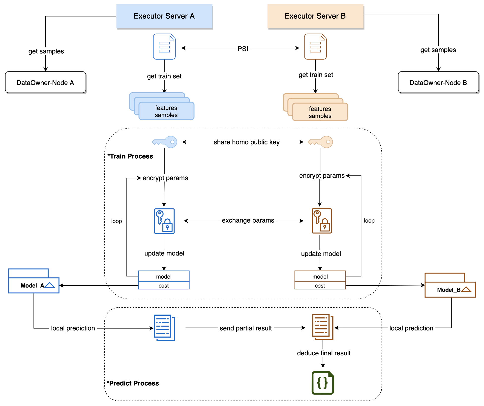

Crypto
Contents
4. Crypto#
PaddleDTX 的 crypto 模块实现了若干机器学习算法和对应的分布式改造，为分布式计算网络提供了算法支撑。
目前开源了纵向联邦学习算法，包括多元线性回归和多元逻辑回归。同时支持秘密分享、不经意传输、加法同态加密、隐私求交等联邦学习依赖的工具。
4.1. 数据隐私保护#
随着大数据和机器学习技术地不断发展，人工智能在各个领域实现了商业落地。然而，数据孤岛和数据隐私保护问题普遍存在。企业间渴望通过协作计算发挥各自数据的价值，又担心泄露用户敏感数据和企业机密信息。
为实现数据的跨企业协同计算，同时保护数据的隐私，联邦学习技术应运而生。 联邦学习支持多个参与方利用己方数据共同建模和预测，数据在各方本地进行处理，通过中间参数的加密传输和计算，获得最终的模型或预测结果。在这个过程中，各方原始数据的隐私得到了保护，真正实现了数据可用不可见。
联邦学习分为横向联邦学习、纵向联邦学习和联邦迁移学习：
横向联邦学习：参与方的特征重叠较多，而样本重叠较少。将样本按照横向切分，取出各方特征相同而样本不同的那部分数据进行训练；
纵向联邦学习：参与方的样本重叠较多，而特征重叠较少。将样本按照纵向切分，取出各方样本相同而特征不同的那部分数据进行训练；
联邦迁移学习：参与方样本与特征重叠都较少，该场景下不对数据进行切分，而是利用迁移学习来克服数据或标签不足的情况。
4.2. 机器学习算法#
PaddleDTX 目前已经开源多元线性回归和多元逻辑回归算法，决策树、神经网络等更丰富的机器学习算法即将开源。
4.2.1. 1.1 多元线性回归#
多元线性回归用来描述一个变量受多个因素影响，且他们的关系可以用多元线性方程表示的场景。如房屋价格受房屋大小、楼层数、周边环境等因素影响。
线性回归的模型可以用如下表达式描述：
y = θ0 + θ1X1 + θ2X2 + … + θnXn
其中，目标特征值由n个变量乘以对应系数再加上常数项计算得到。学习过程就是通过迭代找到合适的系数，使得模型在训练集合的误差尽量小。
4.2.2. 1.2 多元逻辑回归#
不同于多元线性回归，多元逻辑回归的目标特征值是离散的，通常定义为{1,0}，分别表示目标特征是否为指定值。如利用鸢尾花卉数据集，可以训练模型来判断给定的样本是否为山鸢尾。
逻辑回归的模型可以用如下表达式描述(Sigmoid函数)：
y = 1 / (1 + e-θX)
该模型是基于线性回归模型变化得到的，模型连续可导，且可以保证目标特征是(0,1)之间的数值，越接近1表明样本是指定值的概率越大。学习过程就是通过迭代找到合适的参数θ，使得模型在训练集合的误差尽量小。
4.3. 纵向联邦学习#
PaddleDTX 目前已经开源两方的纵向联邦学习算法，包括多元线性回归和多元逻辑回归。多方横向联邦学习和多方纵向联邦学习相关算法即将开源，敬请期待。
纵向联邦训练和预测步骤如下：
4.3.1. 2.1 数据准备#
计算任务会指定参与方的样本数据，数据存在去中心化存储系统(XuperDB)中。任务启动前，任务计算方(即数据持有方)需要从XuperDB获取自己的样本数据。
4.3.2. 2.2 样本对齐#
纵向的模型训练或预测任务，都需要对数据进行样本对齐，即：根据各自样本ID找到多个参与方的样本交集，用交集样本进行训练或预测。
项目采用了PSI(隐私求交)技术，可以在不泄露各方样本ID的前提下，实现样本求交的功能。
4.3.3. 2.3 训练过程#
模型训练是多次迭代和交互的过程，依赖于两方数据的协同计算，需要双方不断传递中间参数来计算出各自的模型。
为保护样本数据的隐私，迭代过程的模型中间参数采用Paillier同态算法进行加密，Paillier支持密文加法和数乘操作。
4.3.4. 2.4 预测过程#
预测任务需要指定模型，因此在预测任务启动前，指定的模型训练任务必须已经成功完成。模型分别存储在训练双方的本地，在预测时分别利用各自的模型进行计算，并汇总得到最终结果。
对于线性回归算法，预测结果汇总后需要进行逆标准化操作，这个操作只有拥有标签的那一方才能完成，因此需要将预测结果汇总到标签方，由标签方计算最终的预测结果，并将结果以文件的形式存到XuperDB中，供需求方获取。